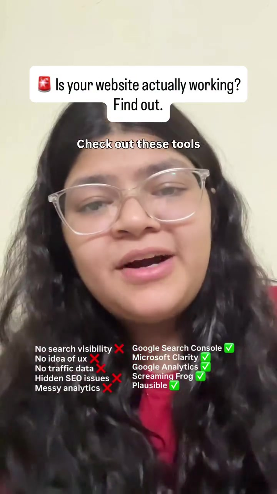
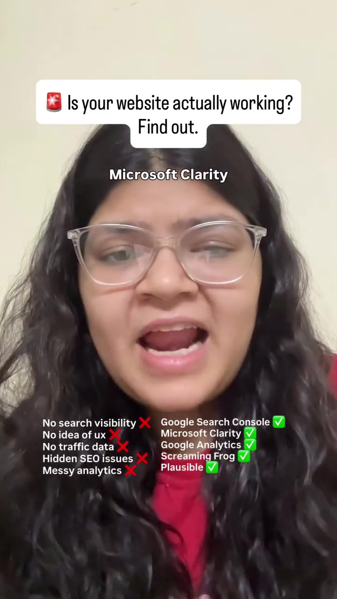
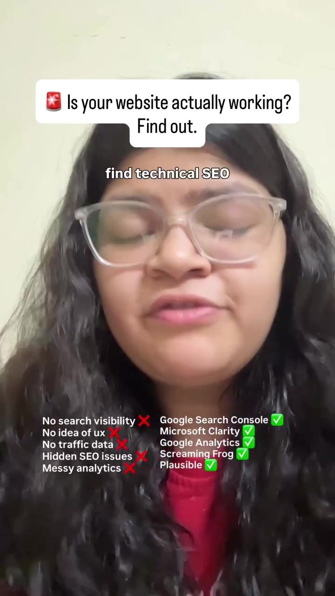

Engineering · Production-Readiness
Website Post-Launch Verification: The 4-Tool Diagnostic & Health Suite
Deploying code to production is only the beginning of a web application's lifecycle. Without immediate post-launch instrumentation, broken routes, non-indexed canonical tags, rage clicks, and Core Web Vital penalties quietly decimate user retention and search rankings. This guide codifies the essential 4-tool diagnostic suite every engineering team must verify within 24 hours of going live.
Visual Reference Stills



The 4 Post-Launch Verification Primitives
Primary Goal: Verify indexation coverage and structured data validity.
- Submit XML sitemap (
/sitemap.xml) to initiate crawler discovery. - Inspect URL inspection tool to ensure JavaScript renders properly for Googlebot.
- Review Core Web Vitals report (LCP under 2.5s, INP under 200ms, CLS under 0.1).
Primary Goal: Free, privacy-compliant user behavior recording.
- Rage Clicks: Pinpoints dead buttons, unresponsive inputs, or misleading UI affordances.
- Dead Clicks: Identifies unlinked text or images that users repeatedly attempt to click.
- Scroll Heatmaps: Reveals exactly where 50% and 75% of users abandon the page fold.
Primary Goal: Exhaustive local crawler audit of internal link topology.
- Detects broken internal links (404s, 500s) and redirection loops (301 chains).
- Audits missing meta descriptions, duplicate
<h1>tags, and unoptimized images > 500KB. - Verifies canonical tags and prevents accidental
noindexrobots tags on production pages.
Primary Goal: Tracking conversion funnels and inbound acquisition channels.
- Instrument custom event triggers on primary CTA clicks and lead form submissions.
- Monitor bounce rates by device type (desktop vs mobile viewport rendering).